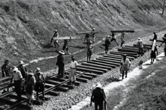
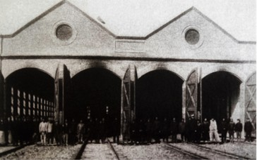
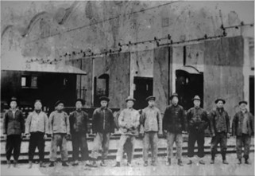
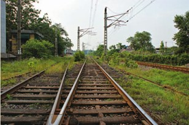
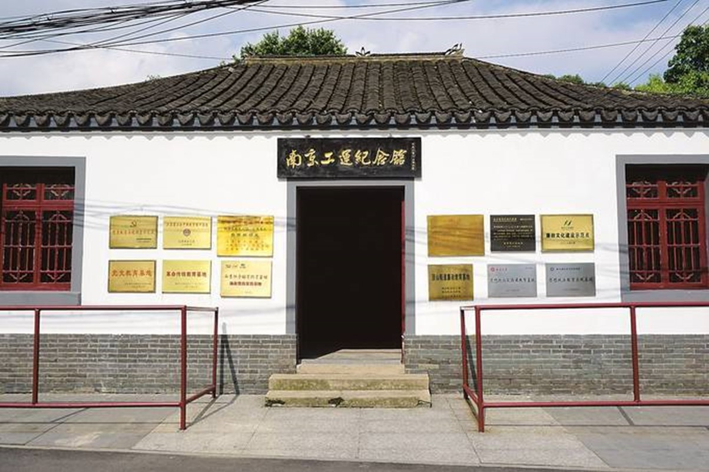

两浦烽火：南京早期工人运动的壮丽篇章
前言：
在历史的长河中，南京的早期工人运动以其波澜壮阔的斗争历程和坚定不屈的斗争精神，成为了中国工人运动史上不可或缺的一部分。其中，两浦（即浦口和浦镇）工人运动更是以其独特的地理位置和重要的交通枢纽地位，成为了南京工人运动浪潮的急先锋。
一、两浦工人：觉醒与斗争的先锋
两浦地区作为南京的重要工业基地和交通枢纽，早在清末民初，这里就孕育了第一代产业工人。面对资本家的剥削和压迫，两浦的工人们没有选择沉默，而是勇敢地站了出来，通过罢工、示威等形式进行斗争。他们的觉醒与斗争，不仅为自身争取了合法权益，更为南京乃至全国的工人运动树立了榜样。
图：民国时期铁路建设工人
二、英勇抗争：两浦工人运动的壮丽画卷
在两浦工人运动的历史长卷中，必然不乏英勇抗争的壮丽画卷。1922年，浦口码头工人为了争取增加工资和改善工作条件，举行了大规模的罢工斗争。这次罢工得到了南京各界人士的支持和响应，最终迫使资本家做出了让步，取得了斗争的胜利。
同年9月，浦镇机厂的工人们也为了争取同样的权益而举行了罢工，同样取得了胜利。这些斗争不仅彰显了工人们坚定的信念和英勇的担当，更在南京工人运动史留下了光辉的一页。
图：在浦镇机厂机车库前合影的工人
更为著名的是1923年的“二七”铁路工人大罢工。在两浦地区，工人们积极响应号召，举行了大规模的罢工斗争。他们高举红旗，高呼口号，与反动军警进行了英勇的对抗。虽然这次罢工遭到了残酷的镇压，但工人们展现出了不屈不挠的斗争精神和坚定的革命信念。他们的英勇事迹和无私奉献，永远铭刻在了南京工人运动的历史丰碑上。
图：“津浦铁路全线总罢工”工人合影
图：两浦铁路工人大罢工卧轨处旧址
三、传承与发扬：两浦工人精神的光辉照耀未来
两浦工人运动的历史不仅是一部斗争史，更是一部精神传承史。在长期的斗争中，两浦工人们形成了坚定的信念、顽强的意志和无私的奉献精神，这些精神品质不仅在当时激励着工人们不断前进，更在今天激励着广大劳动者为实现中华民族伟大复兴的中国梦而努力奋斗。
图：两浦铁路工人大罢工卧轨处（摄于2010年）
如今，当我们站在新的历史起点上回望过去，两浦工人运动的历史依然闪耀着夺目的光辉。它告诉我们，只有坚定信念、英勇斗争，才能赢得尊严和权益；只有团结一心、共同奋斗，才能实现民族复兴的伟大梦想。
图：南京工运纪念馆
让我们铭记这段历史，传承这份精神，以更加昂扬的斗志和坚定的信念，为实现中华民族伟大复兴的中国梦而努力奋斗！两浦烽火，永远照耀着我们前行的道路！